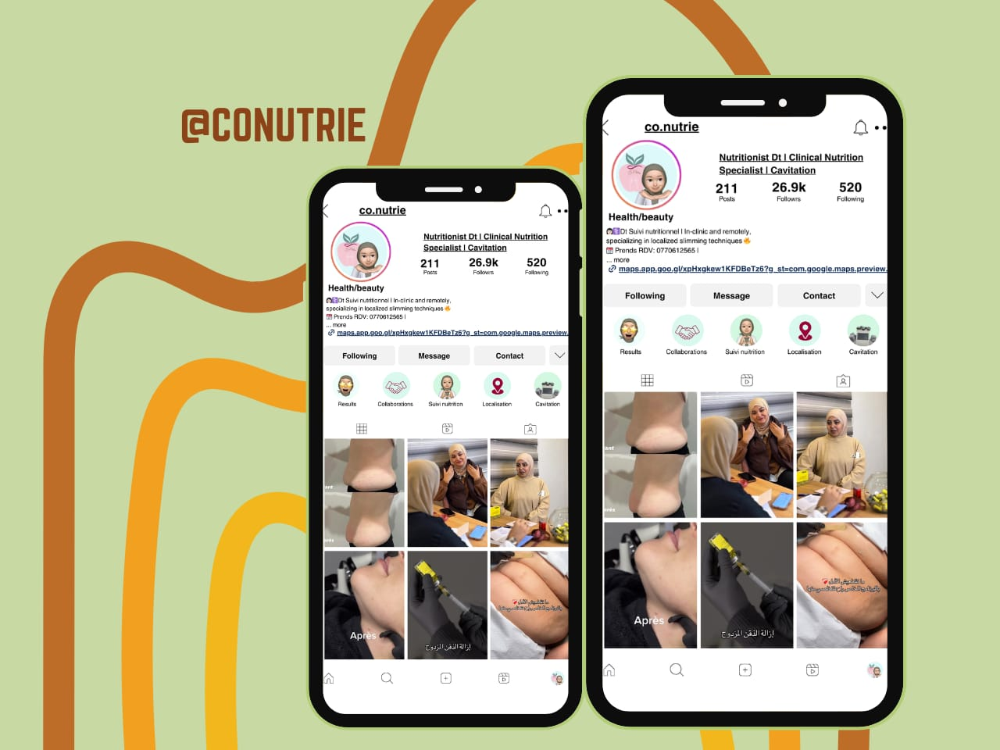

Conutrie is a nutrition and wellness-focused personal brand operating within the health and beauty space.
My role focused on managing the brand's Instagram presence through strategic content planning, educational communication, visual storytelling and profile organization. The goal was to build a digital presence that could communicate expertise, showcase services and results, educate the audience, and encourage potential clients to make inquiries
The challenge was to build a structured social media presence that educates the audience, communicates expertise, showcases services and results, builds trust, and drives inquiries while maintaining consistent and engaging content.
I developed a structured content strategy focused on education, promotion, credibility and visual storytelling, positioning Instagram as a digital brand and customer-acquisition channel while keeping content valuable, engaging and consistent.
The content strategy balanced different types of communication rather than relying on a single content format.
I helped position the account as a structured digital presence capable of communicating expertise, showcasing results and turning social media attention into potential client conversations.
Followers
Posts